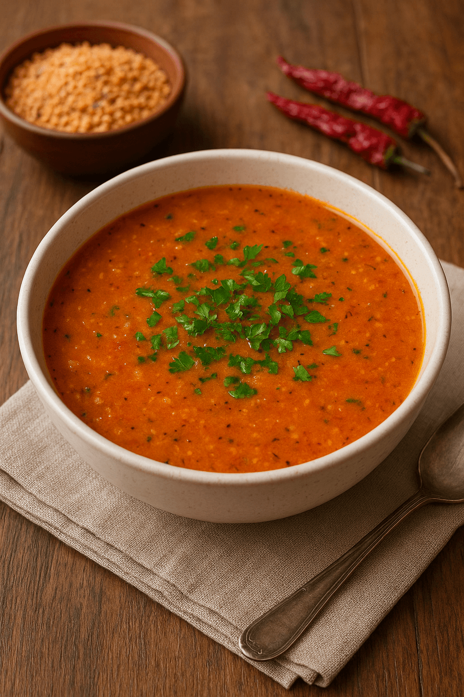

Yemek Tariflerine Hoş Geldiniz
Anasayfa
Çorbalar
Ana Yemekler
Salatalar
Mezeler

Tarhana Çorbası
Malzemeler
- 4 yemek kaşığı tarhana
- 5 su bardağı su (veya et/tavuk suyu)
- 2 yemek kaşığı sıvı yağ veya tereyağı
- 1 yemek kaşığı domates salçası
- 1 tatlı kaşığı biber salçası (isteğe bağlı)
- 1 diş sarımsak (isteğe bağlı)
- Tuz
- Karabiber
Üzeri İçin
Yapılışı
-
Bir tencerede yağ ısıtılır, salça eklenip kavrulur.
-
İstenirse ince doğranmış sarımsak da eklenip kısa süre çevrilir.
-
Ayrı bir kapta tarhana, 1 bardak su ile açılır (topaklanmaması için).
-
Açılan tarhana, kavrulan salçanın üzerine eklenir.
-
Yavaş yavaş su (veya et/tavuk suyu) ilave edilir, sürekli karıştırılır.
-
Orta ateşte kaynayana kadar karıştırarak pişirilir.
-
Kaynadıktan sonra kısık ateşte 10–15 dakika pişirilir.
-
Tuz, karabiber eklenir.
-
Servis ederken üzerine kızdırılmış tereyağı ve kuru nane gezdirilebilir.
👉 Yanında sıcak ekmek ya da pide ile çok güzel gider.